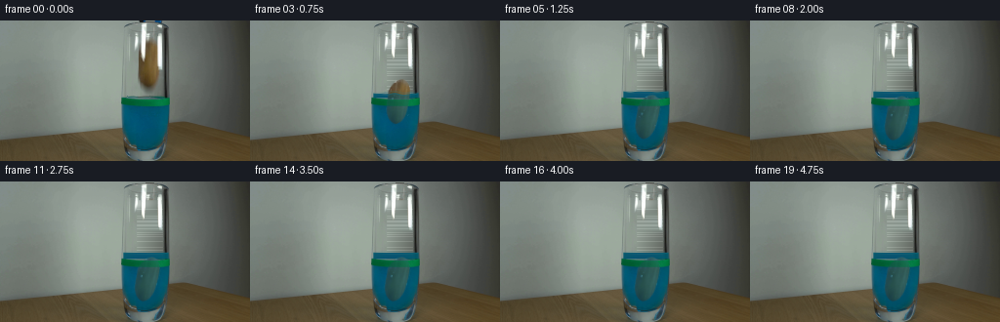
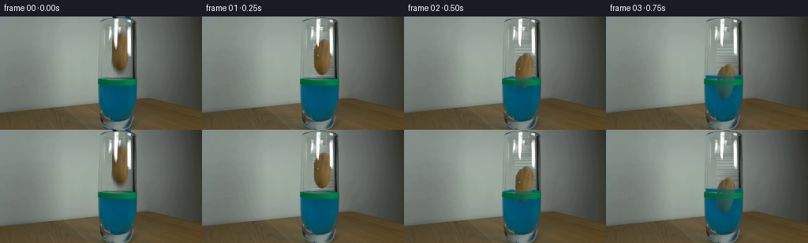
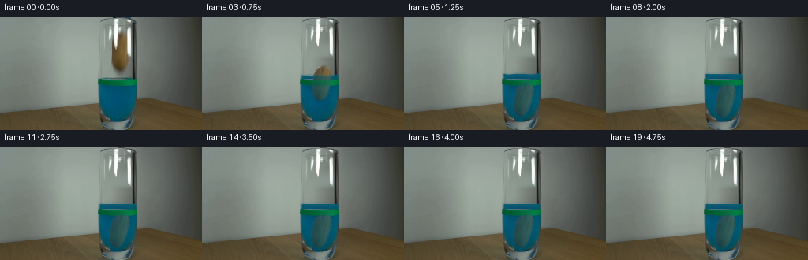
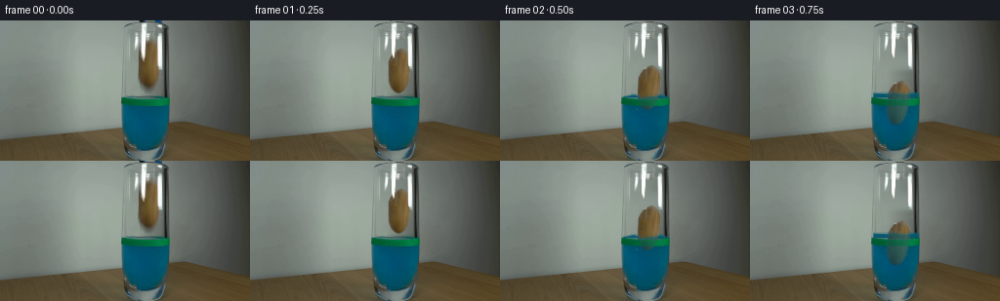

CODING AGENTS AS PIXEL WORLD MODELS
traex/GPT-6.1-Sol · 0142
点击播放 · 原生 RGB 像素
逐轮保存的候选
回放视频、检查图与代码变化。
每份候选均可单独播放。实际图片检查记录在下方工具轨迹中。
候选 01播放与检查图
点击播放 · 原生 RGB 像素


展开代码变化
--- 上一保存版本
+++ 本次保存版本
@@ -0,0 +1,213 @@
+from pathlib import Path
+import numpy as np
+from PIL import Image, ImageDraw
+import cv2
+from scipy.ndimage import gaussian_filter, map_coordinates
+import artifact_io
+
+ROOT = Path(__file__).resolve().parent
+H,W=144,256
+
+def smooth_path(points, samples=12):
+ p=np.asarray(points,float)
+ out=[]
+ for i in range(len(p)):
+ a,b,c,d=[p[(i+j)%len(p)] for j in (-1,0,1,2)]
+ for t in np.linspace(0,1,samples,endpoint=False):
+ out.append(.5*((2*b)+(-a+c)*t+(2*a-5*b+4*c-d)*t*t+(-a+3*b-3*c+d)*t*t*t))
+ return np.array(out)
+
+def silhouette():
+ # The asymmetric outline follows the photographic skin, not a perfect ellipse.
+ pts=[(154.5,20.1),(159,21.5),(162,25),(163.8,30.5),(164.1,39),
+ (163.5,47),(162.6,54.5),(160.2,60.5),(157.1,64.1),
+ (153,66),(149.2,64.8),(146.1,62),(144,58.3),(142.6,54),
+ (142.2,47),(142.1,40),(142.1,33.7),(145,27.5),(149.2,22.6)]
+ canvas=Image.new('L',(W*4,H*4),0)
+ ImageDraw.Draw(canvas).polygon([tuple(v*4) for v in smooth_path(pts)],fill=255)
+ return np.array(canvas.resize((W,H),Image.Resampling.LANCZOS),float)/255
+
+def make_assets(src):
+ yy,xx=np.mgrid[:H,:W].astype(float)
+ # Unoccluded air behind the falling object, inferred only from neighboring RGB.
+ bg=src.astype(float).copy()
+ left=np.mean(src[:,136:141].astype(float),axis=1)
+ right=np.mean(src[:,164:167].astype(float),axis=1)
+ # Upper right samples contain a glass highlight; use the outside flank with
+ # the measured inter-wall light gradient instead.
+ right[:50]=src[:50,166].astype(float)+np.array([7,10,8])
+ left=gaussian_filter(left,(1.25,0))
+ right=gaussian_filter(right,(1.25,0))
+ for y in range(19,77):
+ for x in range(140,167):
+ u=np.clip((x-139)/26,0,1)
+ color=left[y]*(1-u)+right[y]*u
+ # Retain a little of the source sensor texture in the empty glass.
+ noise=float(src[y,135,1]-src[max(0,y-1),135,1])*.07
+ bg[y,x]=color+noise
+ # Blend the perimeter, including the weak diffuse shadow beneath the skin.
+ patch=((xx>=140)&(xx<=166)&(yy>=19)&(yy<=76)).astype(float)
+ patch=gaussian_filter(patch,.6)
+ bg=src*(1-patch[...,None])+bg*patch[...,None]
+ # The tool tips are already at the very top of the frame. Their opening and
+ # withdrawal exposes the same wall above the glass rim.
+ clean=bg.copy()
+ topmask=np.zeros((H,W),float)
+ topmask[0,142:150]=1;topmask[1,142:149]=1
+ topmask[0:2,158:166]=1;topmask[2,162:166]=.8
+ for y in range(3):
+ for x in range(141,167):
+ u=(x-140)/27
+ col=src[y,140]*(1-u)+src[y,167]*u
+ clean[y,x]=clean[y,x]*(1-topmask[y,x])+col*topmask[y,x]
+ # A bright reflection remains fixed on the front of the cylinder. The
+ # strongest pixels can be retained directly; translucent fringes are
+ # recolored to neutral glass instead of retaining a brown potato ghost.
+ reflect=np.zeros((H,W),float)
+ region=(xx>=140)&(xx<=166)&(yy>=19)&(yy<=49)
+ luminance=np.mean(src.astype(float),axis=2)
+ reflect[region]=np.clip((luminance[region]-155)/78,0,1)
+ # Clean photograph of the potato, removing only glass glare from its skin.
+ pm=silhouette()
+ glare=((src.mean(2)>153)&(pm>.01)).astype(np.uint8)*255
+ texture=cv2.inpaint(src,glare,3,cv2.INPAINT_NS).astype(float)
+ # Reconstruct narrow hidden areas using the nearest genuine skin samples.
+ for y in range(20,67):
+ if 24<=y<=39:
+ for x in range(144,149):
+ texture[y,x]=texture[y,150]+(x-150)*np.array([2.1,1.9,1.3])
+ for x in range(161,166):
+ if pm[y,x]>.02:
+ texture[y,x]=texture[y,159]+(x-159)*np.array([-1.4,-1.2,-.7])
+ # Match the pre-existing dark, textured skin, including small subtle pits.
+ rng=np.random.default_rng(192)
+ n=gaussian_filter(rng.normal(size=(H,W)),.42)
+ texture+=n[...,None]*1.4
+ # Treat uncolored silhouette edges as skin rather than carrying background
+ # into the falling cutout (a common compositing halo).
+ true_skin=((src[:,:,0].astype(int)>src[:,:,1].astype(int)+8)&
+ (src[:,:,1].astype(int)>src[:,:,2].astype(int)+14)&(pm>.1))
+ from scipy.ndimage import distance_transform_edt
+ inds=distance_transform_edt(~true_skin,return_distances=False,return_indices=True)
+ near=src[inds[0],inds[1]].astype(float)
+ no_skin=(pm>.01)&(~true_skin)&(src.mean(2)<155)
+ texture[no_skin]=.35*texture[no_skin]+.65*near[no_skin]
+ # Reflections on the unoccupied front glass are kept as a separate layer.
+ reflected=np.maximum(src.astype(float),clean)
+ return clean,pm,texture,reflect,reflected,topmask
+
+def surface_profile(x,level,t,amplitude):
+ return level+amplitude*(.60*np.cos((x-149)*.24-t*12)+.30*np.sin((x-149)*.43+t*7))
+
+def render(src,assets,i):
+ clean,pm,texture,reflection,reflected,topmask=assets
+ yy,xx=np.mgrid[:H,:W].astype(float)
+ t=i/4
+ # Small initial release, then a rapidly damped, drag-limited sink.
+ drops=[0,8.5,26,40,50,55.7,57.0,56.65,57.0]+[57.0]*11
+ dy=drops[i]
+ theta=np.deg2rad(np.interp(t,[0,.25,.5,1,1.5,2.25],[0,1,4,9,12,11]))
+ dx=np.interp(t,[0,.25,.75,1.5,2.25],[0,-.2,-1.5,-2.7,-2.7])
+ # An extremely small settling rock at the floor, not continued floating.
+ if t>1.5:
+ theta+=np.deg2rad(.8*np.exp(-(t-1.5)*2)*np.sin((t-1.5)*7))
+ frame=clean.copy()
+ if i==1:
+ # The last tip of the retracting grabber, only on the top row.
+ frame[0,143:146]=.25*src[0,144:147]+.75*clean[0,143:146]
+ c,s=np.cos(theta),np.sin(theta)
+ cx,cy=153,43
+ X=xx-(cx+dx);Y=yy-(cy+dy)
+ sx=c*X+s*Y+cx;sy=-s*X+c*Y+cy
+ p=map_coordinates(pm,[sy,sx],order=1,mode='constant',cval=0)
+ tex=np.stack([map_coordinates(texture[:,:,k],[sy,sx],order=1,mode='nearest') for k in range(3)],2)
+ # Volume conservation: compute the submerged ellipsoid fraction and the
+ # resulting rise in the much wider cylindrical glass.
+ frac=np.clip((dy-12)/43,0,1)
+ volfrac=frac*frac*(3-2*frac)
+ rise=6.1*volfrac
+ level=78.6-rise
+ age=max(0,t-.33)
+ amp=0 if t<.33 else 2.2*np.exp(-age*1.5)
+ waterline=surface_profile(xx,level,t,amp)
+ # Preserve the original blue liquid and green level tape. The new liquid
+ # above that tape has the same dye and illumination as the existing body.
+ left_edge=125.5+.004*np.maximum(yy-90,0)
+ right_edge=173.0-.015*np.maximum(yy-90,0)
+ glass=np.clip(xx-left_edge+.5,0,1)*np.clip(right_edge-xx+.5,0,1)
+ extension=glass*np.clip(yy-waterline+.5,0,1)*np.clip(79.2-yy,0,1)
+ body_color=np.zeros_like(frame)
+ body_color[:,:,0]=1.5
+ body_color[:,:,1]=80+10*((xx-150)/25)**2+3*np.sin(xx*.085)
+ body_color[:,:,2]=106+5*np.cos((xx-149)*.055)
+ # Translucent dye, specular reflected surroundings on the surface.
+ body_color=.94*body_color+.06*clean
+ frame=frame*(1-extension[...,None])+body_color*extension[...,None]
+ # Disturbance of the original water texture is local and decays away.
+ water_area=(yy>=88)&(yy<=127)&(xx>=127)&(xx<=172)
+ distortion=.6*np.exp(-age*1.9)*np.sin(yy*.42-t*12)*np.sin((xx-125)/47*np.pi) if t>.33 else np.zeros_like(xx)
+ refracted=np.stack([map_coordinates(src[:,:,k].astype(float),[yy,xx+distortion],order=1,mode='nearest') for k in range(3)],2)
+ frame[water_area]=refracted[water_area]
+ submerged=np.clip(yy-waterline,0,1)
+ # Blue dye strongly suppresses red, but the potato remains visibly solid
+ # inside the transparent scientific vessel.
+ depth=np.clip(yy-waterline,0,55)
+ under=np.empty_like(tex)
+ under[:,:,0]=tex[:,:,0]*(.42-.0015*depth)+1.5
+ under[:,:,1]=tex[:,:,1]*(.59-.0011*depth)+35
+ under[:,:,2]=tex[:,:,2]*.54+56
+ tex=tex*(1-submerged[...,None])+under*submerged[...,None]
+ # Front green tape transmits the moving object weakly; its exterior edges
+ # and level remain completely stationary.
+ tape=np.clip((yy-79.5)/1.3,0,1)*np.clip((88-yy)/1.3,0,1)
+ a=p*glass*(1-.60*tape)
+ frame=frame*(1-a[...,None])+tex*a[...,None]
+ # Glass-surface lighting is fixed in the locked-off shot.
+ frame=frame*(1-reflection[...,None])+reflected*reflection[...,None]
+ # Surface ellipse and short, diminishing ripples at the risen water line.
+ if t>.33:
+ edge=np.sqrt(np.clip(1-((xx-149)/24)**2,0,1))
+ boundary=np.exp(-((yy-waterline-1.2*edge)/.65)**2)*glass
+ rear=np.exp(-((yy-waterline+1.3*edge)/.6)**2)*glass
+ strength=.32+.12*np.exp(-age*1.7)
+ col=np.stack([22+16*edge,100+14*edge,115+12*edge],2)
+ r=boundary*strength+rear*.22
+ frame=frame*(1-r[...,None])+col*r[...,None]
+ # A restrained wave crown at the first entry, inside the cylinder.
+ if i in (2,3):
+ crestamp=2.0 if i==2 else .85
+ for xpos in [138,164]:
+ crest=level-crestamp*np.exp(-((xx-xpos)/2.3)**2)
+ m=np.exp(-((yy-crest)/.7)**2)*np.exp(-((xx-xpos)/4)**2)*glass*.33
+ frame=frame*(1-m[...,None])+np.array([45,113,129])*m[...,None]
+ # Few fine bubbles released from the wet skin, rising and disappearing.
+ if .5<=t<=2.5:
+ for j,(bx,by) in enumerate([(139.5,91),(160.6,98),(143.1,105),(159.0,112)]):
+ spawn=.48+j*.14
+ ageb=t-spawn
+ if 0<ageb<1.7:
+ by=by-ageb*14
+ bx=bx+.5*np.sin(ageb*5+j)
+ if by>level+2 and not 80<by<88:
+ d=np.sqrt((xx-bx)**2+(yy-by)**2)
+ ring=np.exp(-((d-.65)/.32)**2)*.28*glass
+ frame=frame*(1-ring[...,None])+np.array([77,126,138])*ring[...,None]
+ # Maintain dark wall and foot outlines in front of the underwater object.
+ walls=np.clip((126.5-xx)/1.5,0,1)+np.clip((xx-171.5)/1.5,0,1)
+ walls=np.clip(walls,0,1)*(yy>10)*(yy<132)*(xx>122)*(xx<176)
+ frame=frame*(1-walls[...,None])+src*walls[...,None]
+ return np.uint8(np.clip(np.rint(frame),0,255))
+
+def main():
+ src=np.asarray(Image.open(ROOT/'first_frame.png').convert('RGB'))
+ assets=make_assets(src)
+ frames=[src.copy()]+[render(src,assets,i) for i in range(1,20)]
+ frames=np.stack(frames)
+ assert np.array_equal(frames[0],src)
+ (ROOT/'.tmp').mkdir(exist_ok=True)
+ Image.fromarray(np.uint8(np.clip(assets[0],0,255))).save(ROOT/'.tmp'/'empty_glass.png')
+ Image.fromarray(np.uint8(np.clip(assets[2],0,255))).save(ROOT/'.tmp'/'skin_texture.png')
+ artifact_io.save(frames,ROOT)
+
+if __name__=='__main__':
+ main()
候选 02播放与检查图
点击播放 · 原生 RGB 像素


展开代码变化
--- 上一保存版本
+++ 本次保存版本
@@ -31,7 +31,7 @@
yy,xx=np.mgrid[:H,:W].astype(float)
# Unoccluded air behind the falling object, inferred only from neighboring RGB.
bg=src.astype(float).copy()
- left=np.mean(src[:,136:141].astype(float),axis=1)
+ left=np.mean(src[:,134:138].astype(float),axis=1)
right=np.mean(src[:,164:167].astype(float),axis=1)
# Upper right samples contain a glass highlight; use the outside flank with
# the measured inter-wall light gradient instead.
@@ -43,7 +43,7 @@
u=np.clip((x-139)/26,0,1)
color=left[y]*(1-u)+right[y]*u
# Retain a little of the source sensor texture in the empty glass.
- noise=float(src[y,135,1]-src[max(0,y-1),135,1])*.07
+ noise=(float(src[y,135,1])-float(src[max(0,y-1),135,1]))*.07
bg[y,x]=color+noise
# Blend the perimeter, including the weak diffuse shadow beneath the skin.
patch=((xx>=140)&(xx<=166)&(yy>=19)&(yy<=76)).astype(float)
@@ -69,7 +69,7 @@
reflect[region]=np.clip((luminance[region]-155)/78,0,1)
# Clean photograph of the potato, removing only glass glare from its skin.
pm=silhouette()
- glare=((src.mean(2)>153)&(pm>.01)).astype(np.uint8)*255
+ glare=(((src.mean(2)>153)|((xx>=145)&(xx<=148)&(yy>=35)&(yy<=41)))&(pm>.01)).astype(np.uint8)*255
texture=cv2.inpaint(src,glare,3,cv2.INPAINT_NS).astype(float)
# Reconstruct narrow hidden areas using the nearest genuine skin samples.
for y in range(20,67):
@@ -104,10 +104,10 @@
yy,xx=np.mgrid[:H,:W].astype(float)
t=i/4
# Small initial release, then a rapidly damped, drag-limited sink.
- drops=[0,8.5,26,40,50,55.7,57.0,56.65,57.0]+[57.0]*11
+ drops=[0,8.5,26,41.5,54,61.1,63,62.75,63]+[63.0]*11
dy=drops[i]
theta=np.deg2rad(np.interp(t,[0,.25,.5,1,1.5,2.25],[0,1,4,9,12,11]))
- dx=np.interp(t,[0,.25,.75,1.5,2.25],[0,-.2,-1.5,-2.7,-2.7])
+ dx=np.interp(t,[0,.25,.75,1.5,2.25],[0,-.2,-1.5,-2.2,-2.2])
# An extremely small settling rock at the floor, not continued floating.
if t>1.5:
theta+=np.deg2rad(.8*np.exp(-(t-1.5)*2)*np.sin((t-1.5)*7))
可观测工具轨迹
实际执行的命令与返回图片。
命令 1exit 0
/bin/bash -lc 'ls -la && cat prompt.txt && cat GENERATION_RULES.md'
命令 2exit 0
/bin/bash -lc "cat artifact_io.py && python - <<'PY'
from PIL import Image
import numpy as np
im=np.array(Image.open('first_frame.png'));print(im.shape)
# coarse color ascii
cols={'K':(25,27,28),'w':(230,230,225),'b':(25,50,80),'B':(60,95,130),'c':(100,140,155),'g':(20,90,30),'p':(150,117,70),'o':(180,148,97),'a':(200,185,151),'s':(140,140,135)}
for y in range(0,144,3):
s=''
for x in range(0,256,3):
rgb=im[y:y+3,x:x+3].mean((0,1)); k=min(cols,key=lambda k:sum((rgb-np.array(cols[k]))**2));s+=k
print(f'{y:3} {s}')
print('sample grid:')
for y in range(0,144,10):
print(y,[(x,im[y,x].tolist()) for x in range(0,256,10)])
PY"命令 3exit 0
/bin/bash -lc "python - <<'PY'
import numpy as np
from PIL import Image
im=np.array(Image.open('first_frame.png'))
for y in range(0,90,2):
s=''
for x in range(118,179):
r,g,b=map(int,im[y,x]);
if min(r,g,b)>195:k='W'
elif min(r,g,b)>170:k='h'
elif r>g+9 and g>b+9:k='P' if r>105 else 'p'
elif g>r+24 and g>b+13:k='G'
elif b>r+18 and g>r+15:k='B' if b>90 else 'b'
elif max(r,g,b)<60:k='K'
elif max(r,g,b)<92:k='d'
elif max(r,g,b)<120:k='s'
else:k='.'
s+=k
print(f'{y:02}: {s}')
print('x coords:118-178')
# find brown intervals
for y in range(16,77):
xs=[x for x in range(135,168) if im[y,x,0]>im[y,x,1]+10 and im[y,x,1]>im[y,x,2]+12]
print(y, min(xs) if xs else None,max(xs) if xs else None)
PY"命令 4exit 0
/bin/bash -lc "python - <<'PY'
from PIL import Image
import numpy as np
im=np.array(Image.open('first_frame.png')).astype(int)
for y in [0,1,2,3,4,8,16,21,24,30,40,50,58,60,64,68,72,76,78,80,87,125,132,135,140]:
print('\\ny',y)
print(' '.join(f'{x}:{r},{g},{b}' for x in range(122,177) for r,g,b in [im[y,x]]))
PY"命令 5exit 0
/bin/bash -lc "python - <<'PY' import importlib.util for v in ['cv2','scipy','numpy','PIL']:print(v, bool(importlib.util.find_spec(v))) PY"
命令 6exit 0
/bin/bash -lc "python - <<'PY'
import numpy as np
from PIL import Image
from scipy.ndimage import label
im=np.array(Image.open('first_frame.png')).astype(int)
m=(im[:,:,2]>im[:,:,0]+22)&(im[:,:,1]>im[:,:,0]+12);m[78:]=0
labs,n=label(m)
for k in range(1,n+1):
y,x=np.where(labs==k)
if len(x)>2:print(len(x),'bounds',x.min(),y.min(),x.max(),y.max(),'rgb',np.mean(im[y,x],axis=0))
print('pixels bottom potato')
for y in range(66,75):
print(y,im[y,144:161].tolist())
PY"命令 7exit 0
/bin/bash -lc "python - <<'PY'
from PIL import Image
import numpy as np
im=np.array(Image.open('first_frame.png')).astype(int)
# classify in full resolution upper glass
for y in range(0,79):
s=''
for x in range(124,176):
r,g,b=im[y,x]
if min(r,g,b)>205:k='@'
elif min(r,g,b)>175:k='O'
elif r>g+10 and g>b+12:k='+' if r>115 else 'p'
elif g>r+20 and b>r+15:k='B'
elif max(r,g,b)<45:k='#'
elif max(r,g,b)<80:k='x'
elif max(r,g,b)<110:k='-'
elif r>b+17:k='o'
else:k='.'
s+=k
print(f'{y:02} {s}')
PY"命令 8exit 0
/bin/bash -lc "cat > generate.py <<'PY'
from pathlib import Path
import numpy as np
from PIL import Image, ImageDraw
import cv2
from scipy.ndimage import gaussian_filter, map_coordinates
import artifact_io
ROOT = Path(__file__).resolve().parent
H,W=144,256
def smooth_path(points, samples=12):
p=np.asarray(points,float)
out=[]
for i in range(len(p)):
a,b,c,d=[p[(i+j)%len(p)] for j in (-1,0,1,2)]
for t in np.linspace(0,1,samples,endpoint=False):
out.append(.5*((2*b)+(-a+c)*t+(2*a-5*b+4*c-d)*t*t+(-a+3*b-3*c+d)*t*t*t))
return np.array(out)
def silhouette():
# The asymmetric outline follows the photographic skin, not a perfect ellipse.
pts=[(154.5,20.1),(159,21.5),(162,25),(163.8,30.5),(164.1,39),
(163.5,47),(162.6,54.5),(160.2,60.5),(157.1,64.1),
(153,66),(149.2,64.8),(146.1,62),(144,58.3),(142.6,54),
(142.2,47),(142.1,40),(142.1,33.7),(145,27.5),(149.2,22.6)]
canvas=Image.new('L',(W*4,H*4),0)
ImageDraw.Draw(canvas).polygon([tuple(v*4) for v in smooth_path(pts)],fill=255)
return np.array(canvas.resize((W,H),Image.Resampling.LANCZOS),float)/255
def make_assets(src):
yy,xx=np.mgrid[:H,:W].astype(float)
# Unoccluded air behind the falling object, inferred only from neighboring RGB.
bg=src.astype(float).copy()
left=np.mean(src[:,136:141].astype(float),axis=1)
right=np.mean(src[:,164:167].astype(float),axis=1)
# Upper right samples contain a glass highlight; use the outside flank with
# the measured inter-wall light gradient instead.
right[:50]=src[:50,166].astype(float)+np.array([7,10,8])
left=gaussian_filter(left,(1.25,0))
right=gaussian_filter(right,(1.25,0))
for y in range(19,77):
for x in range(140,167):
u=np.clip((x-139)/26,0,1)
color=left[y]*(1-u)+right[y]*u
# Retain a little of the source sensor texture in the empty glass.
noise=float(src[y,135,1]-src[max(0,y-1),135,1])*.07
bg[y,x]=color+noise
# Blend the perimeter, including the weak diffuse shadow beneath the skin.
patch=((xx>=140)&(xx<=166)&(yy>=19)&(yy<=76)).astype(float)
patch=gaussian_filter(patch,.6)
bg=src*(1-patch[...,None])+bg*patch[...,None]
# The tool tips are already at the very top of the frame. Their opening and
# withdrawal exposes the same wall above the glass rim.
clean=bg.copy()
topmask=np.zeros((H,W),float)
topmask[0,142:150]=1;topmask[1,142:149]=1
topmask[0:2,158:166]=1;topmask[2,162:166]=.8
for y in range(3):
for x in range(141,167):
u=(x-140)/27
col=src[y,140]*(1-u)+src[y,167]*u
clean[y,x]=clean[y,x]*(1-topmask[y,x])+col*topmask[y,x]
# A bright reflection remains fixed on the front of the cylinder. The
# strongest pixels can be retained directly; translucent fringes are
# recolored to neutral glass instead of retaining a brown potato ghost.
reflect=np.zeros((H,W),float)
region=(xx>=140)&(xx<=166)&(yy>=19)&(yy<=49)
luminance=np.mean(src.astype(float),axis=2)
reflect[region]=np.clip((luminance[region]-155)/78,0,1)
# Clean photograph of the potato, removing only glass glare from its skin.
pm=silhouette()
glare=((src.mean(2)>153)&(pm>.01)).astype(np.uint8)*255
texture=cv2.inpaint(src,glare,3,cv2.INPAINT_NS).astype(float)
# Reconstruct narrow hidden areas using the nearest genuine skin samples.
for y in range(20,67):
if 24<=y<=39:
for x in range(144,149):
texture[y,x]=texture[y,150]+(x-150)*np.array([2.1,1.9,1.3])
for x in range(161,166):
if pm[y,x]>.02:
texture[y,x]=texture[y,159]+(x-159)*np.array([-1.4,-1.2,-.7])
# Match the pre-existing dark, textured skin, including small subtle pits.
rng=np.random.default_rng(192)
n=gaussian_filter(rng.normal(size=(H,W)),.42)
texture+=n[...,None]*1.4
# Treat uncolored silhouette edges as skin rather than carrying background
# into the falling cutout (a common compositing halo).
true_skin=((src[:,:,0].astype(int)>src[:,:,1].astype(int)+8)&
(src[:,:,1].astype(int)>src[:,:,2].astype(int)+14)&(pm>.1))
from scipy.ndimage import distance_transform_edt
inds=distance_transform_edt(~true_skin,return_distances=False,return_indices=True)
near=src[inds[0],inds[1]].astype(float)
no_skin=(pm>.01)&(~true_skin)&(src.mean(2)<155)
texture[no_skin]=.35*texture[no_skin]+.65*near[no_skin]
# Reflections on the unoccupied front glass are kept as a separate layer.
reflected=np.maximum(src.astype(float),clean)
return clean,pm,texture,reflect,reflected,topmask
def surface_profile(x,level,t,amplitude):
return level+amplitude*(.60*np.cos((x-149)*.24-t*12)+.30*np.sin((x-149)*.43+t*7))
def render(src,assets,i):
clean,pm,texture,reflection,reflected,topmask=assets
yy,xx=np.mgrid[:H,:W].astype(float)
t=i/4
# Small initial release, then a rapidly damped, drag-limited sink.
drops=[0,8.5,26,40,50,55.7,57.0,56.65,57.0]+[57.0]*11
dy=drops[i]
theta=np.deg2rad(np.interp(t,[0,.25,.5,1,1.5,2.25],[0,1,4,9,12,11]))
dx=np.interp(t,[0,.25,.75,1.5,2.25],[0,-.2,-1.5,-2.7,-2.7])
# An extremely small settling rock at the floor, not continued floating.
if t>1.5:
theta+=np.deg2rad(.8*np.exp(-(t-1.5)*2)*np.sin((t-1.5)*7))
frame=clean.copy()
if i==1:
# The last tip of the retracting grabber, only on the top row.
frame[0,143:146]=.25*src[0,144:147]+.75*clean[0,143:146]
c,s=np.cos(theta),np.sin(theta)
cx,cy=153,43
X=xx-(cx+dx);Y=yy-(cy+dy)
sx=c*X+s*Y+cx;sy=-s*X+c*Y+cy
p=map_coordinates(pm,[sy,sx],order=1,mode='constant',cval=0)
tex=np.stack([map_coordinates(texture[:,:,k],[sy,sx],order=1,mode='nearest') for k in range(3)],2)
# Volume conservation: compute the submerged ellipsoid fraction and the
# resulting rise in the much wider cylindrical glass.
frac=np.clip((dy-12)/43,0,1)
volfrac=frac*frac*(3-2*frac)
rise=6.1*volfrac
level=78.6-rise
age=max(0,t-.33)
amp=0 if t<.33 else 2.2*np.exp(-age*1.5)
waterline=surface_profile(xx,level,t,amp)
# Preserve the original blue liquid and green level tape. The new liquid
# above that tape has the same dye and illumination as the existing body.
left_edge=125.5+.004*np.maximum(yy-90,0)
right_edge=173.0-.015*np.maximum(yy-90,0)
glass=np.clip(xx-left_edge+.5,0,1)*np.clip(right_edge-xx+.5,0,1)
extension=glass*np.clip(yy-waterline+.5,0,1)*np.clip(79.2-yy,0,1)
body_color=np.zeros_like(frame)
body_color[:,:,0]=1.5
body_color[:,:,1]=80+10*((xx-150)/25)**2+3*np.sin(xx*.085)
body_color[:,:,2]=106+5*np.cos((xx-149)*.055)
# Translucent dye, specular reflected surroundings on the surface.
body_color=.94*body_color+.06*clean
frame=frame*(1-extension[...,None])+body_color*extension[...,None]
# Disturbance of the original water texture is local and decays away.
water_area=(yy>=88)&(yy<=127)&(xx>=127)&(xx<=172)
distortion=.6*np.exp(-age*1.9)*np.sin(yy*.42-t*12)*np.sin((xx-125)/47*np.pi) if t>.33 else np.zeros_like(xx)
refracted=np.stack([map_coordinates(src[:,:,k].astype(float),[yy,xx+distortion],order=1,mode='nearest') for k in range(3)],2)
frame[water_area]=refracted[water_area]
submerged=np.clip(yy-waterline,0,1)
# Blue dye strongly suppresses red, but the potato remains visibly solid
# inside the transparent scientific vessel.
depth=np.clip(yy-waterline,0,55)
under=np.empty_like(tex)
under[:,:,0]=tex[:,:,0]*(.42-.0015*depth)+1.5
under[:,:,1]=tex[:,:,1]*(.59-.0011*depth)+35
under[:,:,2]=tex[:,:,2]*.54+56
tex=tex*(1-submerged[...,None])+under*submerged[...,None]
# Front green tape transmits the moving object weakly; its exterior edges
# and level remain completely stationary.
tape=np.clip((yy-79.5)/1.3,0,1)*np.clip((88-yy)/1.3,0,1)
a=p*glass*(1-.60*tape)
frame=frame*(1-a[...,None])+tex*a[...,None]
# Glass-surface lighting is fixed in the locked-off shot.
frame=frame*(1-reflection[...,None])+reflected*reflection[...,None]
# Surface ellipse and short, diminishing ripples at the risen water line.
if t>.33:
edge=np.sqrt(np.clip(1-((xx-149)/24)**2,0,1))
boundary=np.exp(-((yy-waterline-1.2*edge)/.65)**2)*glass
rear=np.exp(-((yy-waterline+1.3*edge)/.6)**2)*glass
strength=.32+.12*np.exp(-age*1.7)
col=np.stack([22+16*edge,100+14*edge,115+12*edge],2)
r=boundary*strength+rear*.22
frame=frame*(1-r[...,None])+col*r[...,None]
# A restrained wave crown at the first entry, inside the cylinder.
if i in (2,3):
crestamp=2.0 if i==2 else .85
for xpos in [138,164]:
crest=level-crestamp*np.exp(-((xx-xpos)/2.3)**2)
m=np.exp(-((yy-crest)/.7)**2)*np.exp(-((xx-xpos)/4)**2)*glass*.33
frame=frame*(1-m[...,None])+np.array([45,113,129])*m[...,None]
# Few fine bubbles released from the wet skin, rising and disappearing.
if .5<=t<=2.5:
for j,(bx,by) in enumerate([(139.5,91),(160.6,98),(143.1,105),(159.0,112)]):
spawn=.48+j*.14
ageb=t-spawn
if 0<ageb<1.7:
by=by-ageb*14
bx=bx+.5*np.sin(ageb*5+j)
if by>level+2 and not 80<by<88:
d=np.sqrt((xx-bx)**2+(yy-by)**2)
ring=np.exp(-((d-.65)/.32)**2)*.28*glass
frame=frame*(1-ring[...,None])+np.array([77,126,138])*ring[...,None]
# Maintain dark wall and foot outlines in front of the underwater object.
walls=np.clip((126.5-xx)/1.5,0,1)+np.clip((xx-171.5)/1.5,0,1)
walls=np.clip(walls,0,1)*(yy>10)*(yy<132)*(xx>122)*(xx<176)
frame=frame*(1-walls[...,None])+src*walls[...,None]
return np.uint8(np.clip(np.rint(frame),0,255))
def main():
src=np.asarray(Image.open(ROOT/'first_frame.png').convert('RGB'))
assets=make_assets(src)
frames=[src.copy()]+[render(src,assets,i) for i in range(1,20)]
frames=np.stack(frames)
assert np.array_equal(frames[0],src)
(ROOT/'.tmp').mkdir(exist_ok=True)
Image.fromarray(np.uint8(np.clip(assets[0],0,255))).save(ROOT/'.tmp'/'empty_glass.png')
Image.fromarray(np.uint8(np.clip(assets[2],0,255))).save(ROOT/'.tmp'/'skin_texture.png')
artifact_io.save(frames,ROOT)
if __name__=='__main__':
main()
PY
python generate.py"命令 9exit 0
/bin/bash -lc "python - <<'PY'
import numpy as np
from PIL import Image
im=np.array(Image.open('frames/19.png')).astype(int)
for y in range(16,135,2):
s=''
for x in range(123,176):
r,g,b=im[y,x]
if min(r,g,b)>205:k='@'
elif min(r,g,b)>175:k='O'
elif r>g+10 and g>b+12:k='p'
elif r>25 and b>r+5 and abs(g-b)<25:k='u'
elif g>r+22 and g>b+12:k='G'
elif g>r+20 and b>r+15:k='B'
elif max(r,g,b)<45:k='#'
elif max(r,g,b)<80:k='x'
elif max(r,g,b)<110:k='-'
else:k='.'
s+=k
print(f'{y:03} {s}')
f=np.stack([np.array(Image.open('frames/%02d.png'%i)) for i in range(20)])
for i in [1,2,3,4,7,19]:
d=np.abs(f[i].astype(int)-f[0].astype(int)); y,x=np.where(d.max(2)>10)
print(i,'diffbounds',x.min(),y.min(),x.max(),y.max(),'outside change',np.sum(d[:,:123]),'avg',d.mean())
print('empty patch colors:')
f=np.array(Image.open('.tmp/empty_glass.png'))
for y in range(20,76,4):print(y,f[y,140:166:4].tolist())
PY"命令 10exit 0
/bin/bash -lc "python - <<'PY'
import generate as g
from PIL import Image
import numpy as np
src=np.array(Image.open('first_frame.png'));clean,pm,tex,*_=g.make_assets(src)
for y in [21,23,27,30,35,40,45,50,55,60,64,66]:
print(y,[(x,tuple(np.rint(tex[y,x]).astype(int))) for x in range(141,166,3) if pm[y,x]>.15])
PY"命令 11exit 0
/bin/bash -lc "python - <<'PY'
from PIL import Image
import numpy as np
from scipy.ndimage import label
im=np.array(Image.open('first_frame.png')).astype(int)
m=(im.mean(2)>185);m[80:]=False
labs,n=label(m)
for k in range(1,n+1):
y,x=np.where(labs==k)
if len(x)>5:print(len(x),x.min(),y.min(),x.max(),y.max())
PY"命令 12exit 0
/bin/bash -lc "python generate.py && python - <<'PY'
import numpy as np
from PIL import Image
from pathlib import Path
f=np.stack([np.array(Image.open(p)) for p in sorted(Path('frames').glob('*.png'))])
assert f.shape==(20,144,256,3) and f.dtype==np.uint8
assert np.array_equal(f[0],np.array(Image.open('first_frame.png')))
print('Verified:',f.shape,f.dtype,'first frame exact')
for i in [1,2,3,4,6,10,19]:
d=np.abs(f[i].astype(int)-f[0].astype(int))
print(i, 'changed pixels',np.sum(d.max(2)>0), 'mean change',round(d.mean(),3))
print('artifacts',[(p.name,p.stat().st_size) for p in [Path('pixels.npz'),Path('index.html'),Path('generate.py')]])
PY"保存候选 2 份；完成命令 12 次；可验证图片返回 0 张。原始 API 响应与完整日志保留在本地。